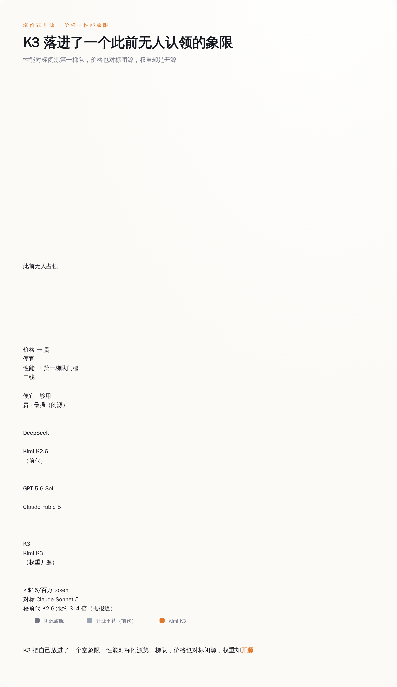
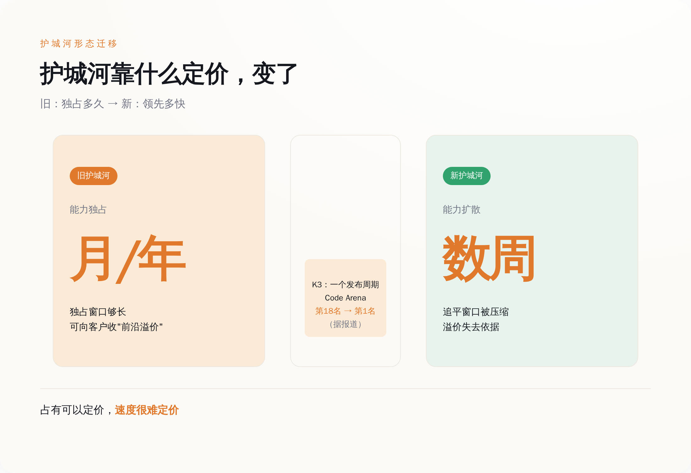
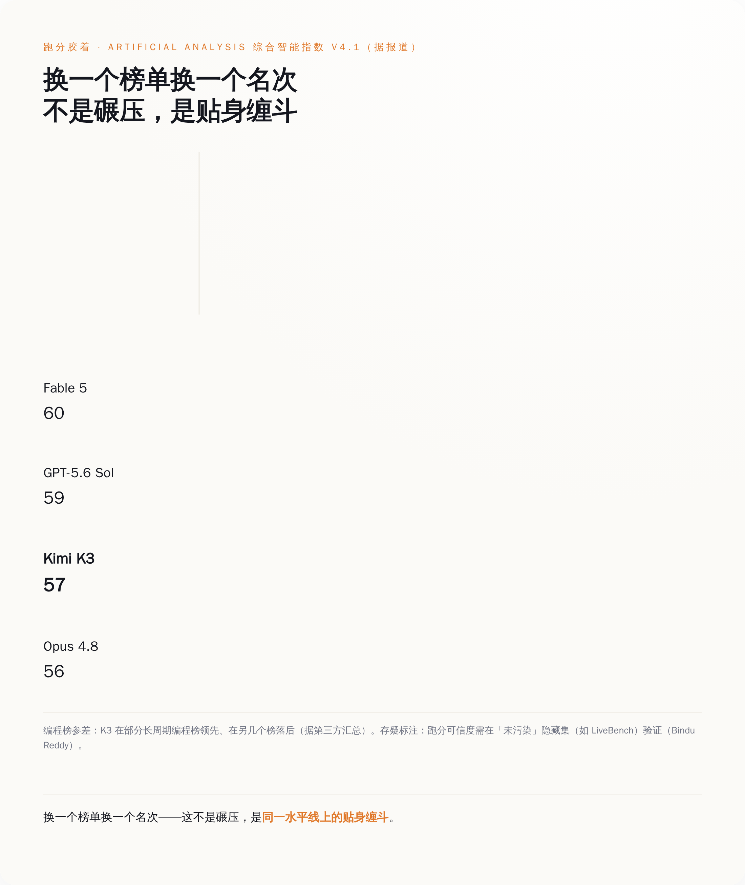
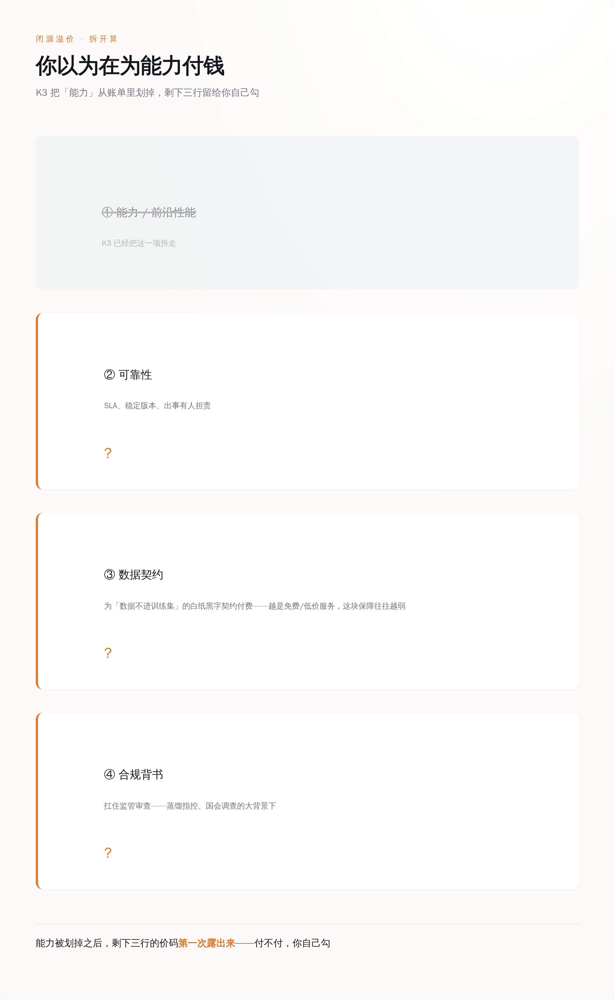

AI大模型
全球最大的开源模型，卖出了闭源的价钱
2026-07-17
计算中…
过去两年，每个从中国实验室出来的开源模型都在讲同一个故事：又大、又强、又便宜。7 月 16 日，月之暗面发布 Kimi K3——2.8 万亿参数、全球最大的开源权重模型，然后把价格涨了三四倍。一个开源模型，卖出了闭源的价钱。恰恰是这件反常的事，比再来一次降价更让 OpenAI 和 Anthropic 难受。
一、逼宫闭源的第一枪，不是降价，是涨价
先把价格摆出来。据多家外媒综合报道，K3 的 API 定价是：输入每百万 token 缓存未命中 3 美元、命中 0.3 美元，输出每百万 token 15 美元。这个数字和 Claude Sonnet 5 站在同一档，比月之暗面自己上一代的 K2.6 贵了大约三到四倍。科技媒体 The Decoder 干脆把报道标题写成"超便宜中国 AI 的终结"。
这和所有人的预期是反的。中国开源模型的剧本一直是"以价换量"：先把价格砸到地板，用规模换生态位，再谈别的。K3 反过来走——性能刚够到第一梯队的边，价钱就先提上去了。国内有媒体把这解读成"涨价证明实力"。这话不算错，但它只说了表面。
涨价和开源，按旧逻辑本该互斥。
开源是为了扩散，扩散靠低门槛，低门槛的极致就是免费加便宜；一个东西既要把权重白送出去，又要在 API 上卖贵，听起来像是既要又要。但如果你把闭源实验室的护城河看清楚，就会发现 K3 这一手恰恰打在了最疼的地方。
闭源模型的商业逻辑，本质是一个信息不对称的定价。你不知道 GPT-5.6 或者 Fable 5 内部到底是怎么回事，你只能相信它值那个价——前沿能力是稀缺的，稀缺就该付溢价。这套逻辑成立的前提，是"前沿"和"闭源"被绑在一起：想要最好的，就得接受不透明，接受人家定多少你付多少。
K3 做的事情，是把这个绑定拆开。它先证明一件事——一个把权重完全公开的模型，性能可以摸到闭源第一梯队的门槛。据 Arena.ai 报道，K3 在前端代码竞技场 Frontend Code Arena 上以 1679 分登顶，反超 Claude Fable 5 的 1631 和 GPT-5.6 Sol 的 1618，而它的前代 K2.6 在同一个榜单上还排在第 18 位。一个发布周期，跳了 17 名。跑分能不能全信是另一回事，后面会专门说，但至少在叙事层面，"开源等于二流"这个假设被撕开了一道口子。

K3 把自己放进了一个空象限：性能对标闭源第一梯队，价格也对标闭源，权重却开源。
撕开这道口子之后，涨价就不再是"既要又要"，而是一次精准的定价宣示：我的东西好到可以卖你闭源的价，而且我还敢把它开源。
有人会立刻反驳：涨价不过是因为 2.8 万亿参数跑起来本就烧钱。这话说反了。后面会看到，K3 恰恰是把成本抠下来的一代——稀疏架构、活跃参数只有 500 亿量级，月之暗面完全有空间定得更低，它却主动把价钱顶到了闭源那一档。这不是成本逼出来的定价，是挑出来的定价。
翻译给 OpenAI 和 Anthropic 听，就是——你们那份"前沿溢价"，从今天起要重新解释了。
降价冲击的是价格表上的一个数字，改一改就能跟。涨价加开源，冲击的是"想要前沿就得付溢价"这个前提——它把能力那一档从溢价里拆出来，逼闭源单独解释剩下的。
二、2.8 万亿参数没人跑得动，那"开源"到底开了什么
这里要先泼一盆冷水。很多人听到"开源"，脑子里蹦出来的是"我可以自己部署，省下 API 的钱"。对 K3 来说，这个想象基本不成立。
2.8 万亿参数是什么概念。哪怕它用的是混合专家架构、每次前向只激活一小部分，完整权重加载起来对硬件的要求，也远超绝大多数企业的自建机房——2.8 万亿参数的完整副本，本地部署的门槛高到不现实。换句话说，这份"开源"里的绝大多数人，从一开始就没打算、也没能力把它下载下来自己跑。
那开源开的是什么？
开的是两样闭源永远给不了的东西：定价的可核查，和结果的可复现。
先说可核查。独立开发者 Simon Willison 在发布当天做了一件很极客的事——他用自己那个招牌提示词，让 K3 画一只骑自行车的鹈鹕的 SVG。结果是：模型烧掉了 13241 个推理 token，才吐出 3417 个 token 的回应，这一次调用花了他大约 25 美分。他还发现，你只输入一个"hi"，都会被计成 86 个 token，怀疑模型内部塞了一段大约 85 token 的隐藏系统提示词。他顺手记了一句：K3 目前只有一档"max"推理强度，吃 token 明显。
这段实测里没有一个字是夸 K3 便宜的。恰恰相反，它证明 K3 用起来又贵又啰嗦。但 Willison 能做这件事本身才是要点——他能一分钱一分钱地把成本算清楚，能扒出隐藏的系统提示词，能确认它只有一档推理强度。这种透明度，你在任何一个闭源模型上都做不到。GPT 内部烧了多少推理 token、藏了多长的系统提示、有几档隐藏档位，你不知道，你只能付钱。
开源权重把这层黑箱掀掉了。它不让你省钱，它让你知道自己的钱花在哪、值不值。对一个要长期把业务架在模型上的公司来说，这件事的分量不比省几毛钱小。
可复现是另一回事。这里的"第三方"不是指你我，是 Arena.ai、Artificial Analysis 这类有算力、有评测体系的机构。权重一公开，它们就能拿同一套输入反复验证 K3 的能力边界——它在哪类任务上真强，在哪类上是跑分泡沫，有没有过拟合评测集，都摊在阳光下等人扒。普通用户跑不动这个模型，但有人替你跑了，而且跑的过程是公开的。闭源模型的能力，是一个需要你信任厂商公关的说法；开源模型的能力，是一个可以被反复验证或证伪的事实。
从买方的角度，这是议价权的转移。以前你面对闭源报价，只能接受或者走人；现在你手里多了一把尺子：同样的活，一个性能对标的开源模型公开的成本结构长这样，那闭源多收的这部分，到底买的是什么？
这个问题一旦被问出来，闭源就必须回答。2.8 万亿参数就算没人自己部署，也依然是一把架在闭源定价上的尺子——它不让你省钱，它让闭源多收的每一分都得有个说法。
三、护城河的形态变了：从能力独占，到能力扩散的速度
K3 敢卖闭源的价，是有技术底气的，得先把这层说清楚，不然"逼宫"就成了空话。
它的稀疏架构叫 Stable LatentMoE，896 个专家里每次只激活 16 个，用这种方式让 2.8 万亿的总参数在训练和推理上变得可行，实际活跃的参数量被概括到大约 500 亿的量级。它还引入了一个叫"注意力残差"（Attention Residuals）的东西，作为标准残差连接的替代，官方称在额外算力不到 2% 的前提下带来约 25% 的训练效率提升——这两个数字经过了多个独立来源的交叉核对。至于它主打的 Kimi Delta Attention 混合线性注意力，官方宣称在百万 token 上下文里最高能把解码提速 6.3 倍，这个数字各处口径不一、暂时存疑，先记着别当结论用。
这些机制的意思是，月之暗面没有靠堆算力硬怼，而是在架构上找了几条更省的路。省下来的成本，一部分变成了它敢开源的底气——训练一个前沿模型的边际成本降下来了，白送权重才不至于伤筋动骨。
但这里立刻会撞上一个更尖锐的问题：K3 追上来，到底是自己趟出来的，还是站在别人肩膀上的？
Anthropic 公开指控月之暗面，连同 DeepSeek、MiniMax，通过"模型蒸馏"提取 Claude 的能力，违反了服务条款。白宫科技政策办公室（OSTP）在一份备忘录里把这类做法定性为"蓄意、对抗性、工业级规模"，月之暗面还一并被卷进针对 Airbnb、Cursor 的国会调查。这是很重的指控，需要说明的是：它目前是指控，尚无定论，本文不替任何一方下判断。
反方的声音，同样来自圈内权威。艾伦人工智能研究所的训练负责人、长期研究这个问题的 Nathan Lambert 指出，蒸馏是这个行业的通行做法——美国公司同样在蒸馏中国的开源模型——而且目前没有任何技术手段能真正制止，只能靠各家自律。另一位研究者 Michiel Bakker 更直接地质疑：那套"中国实验室算力少、只能靠蒸馏追赶"的旧叙事，根本解释不了 K3 这么大的跃升。
把这两方的声音放在一起，会看到一件比"谁抄了谁"更重要的事：护城河的形态，正在从"能力独占"变成"能力扩散的速度"。

旧护城河靠“独占多久”，新护城河靠“领先多快”——独占可以定价，速度很难定价。
过去闭源的安全感，建立在一个假设上——最强的能力能被一家公司独占足够久，久到可以从容变现。蒸馏争议之所以让人焦虑，正是因为它把这个"足够久"不断压短。当最前沿的能力很快就能以某种方式扩散到一个开源权重上，独占本身就不再是护城河了。
新的护城河是什么？是你比对手快多少、你的能力在被追平之前能领跑多久、你能不能在扩散追上来之前完成下一次跳跃。这是一场关于速度的竞赛，不再是关于占有的竞赛。
对闭源实验室来说，这个转变很不舒服。占有可以定价，速度很难定价。你没法对客户说"因为我领先你三周，所以请多付 40%"——客户会等那三周，或者直接用那个开源的。
四、跑分是胶着，不是碾压
说到这里得踩一脚刹车，不然这篇文章就成了另一份跑分通稿。K3 的性能叙事，仔细看是有保留的。
据 Artificial Analysis 的综合智能指数，K3 得 57 分，确实略高于 Anthropic 的 Opus 4.8（56），但仍然落在 GPT-5.6 Sol（59）和 Claude Fable 5（60）后面。同一家机构还指出，K3 在一项衡量知识可靠性的评测 AA-Omniscience 上，幻觉率不降反升。够到了第一梯队的门槛，但没甩开任何人。

换一个榜单换一个名次——这不是碾压，是同一水平线上的贴身缠斗。
编程任务上的表现也不是一边倒。据第三方汇总，K3 在一部分软件工程基准上领先——比如某个长周期编程评测拿了较高分——却在另一些榜单上落后于对手。同一个模型，换一个榜单就换一个名次，这恰恰说明它和顶级闭源之间没有代差，是同一水平线上的互有胜负。
更要紧的是，这些跑分本身有多可信，也被人打了问号。AI 研究者 Bindu Reddy 提醒，基准故事很可能被夸大，除非能在那些"未被污染"的隐藏测试集上复现——一个模型如果专门针对公开榜单优化过，榜单分数就会虚高。也有基准的维护者质疑 K3 的某些得分算法有拔高之嫌。
那前面说的"一夜从第 18 跳到第 1"呢？它是真的，也是脆弱的。Frontend Code Arena 的登顶被 Arena 官方账号、甚至 Polymarket 的官方账号同日转发，故事一路溢出到预测市场和金融圈。传播得越猛，越要小心——单一榜单的一次登顶，和"综合能力反超"是两码事。
把这些放在一起，得到的是一个比标题克制得多的结论：K3 在几条线上够到了闭源第一梯队，在另几条线上还差一口气，整体是胶着，不是超越。
那为什么胶着也能构成逼宫？因为逼宫的从来不是"超越"，是"够得着"。
闭源溢价的定价逻辑，需要的是一条清晰的能力鸿沟——你差得远，所以你多付钱理所当然。胶着恰恰抹掉了这条鸿沟。当一个开源模型在综合分上和你打成平手、在某些任务上还反超，"你差得远"这个前提就不成立了，溢价也就失去了最硬的那个理由。
五、那闭源那份溢价，到底还值不值
前面全是格局，落到你自己身上，只剩一个具体问题：K3 之后，选型这笔账该怎么算。
旧的算法很简单，就是比价——同样的能力，谁便宜用谁。但 K3 恰好堵死了这条路：它开源，却不便宜。你没法再拿"开源省钱"当默认答案了。这反而是件好事，它逼着每个人把那个一直被价格掩盖的问题摆到台面上——你为闭源多付的那部分钱，到底买的是什么？
至少有三样东西，是开源目前给不了、值得单独标价的。
第一样是可靠性的承诺。开源权重你能自己验证，但验证要成本、要人、要时间；闭源厂商用 SLA、用稳定的版本管理、用出了事有人担责，把这部分成本替你扛了。对一个把核心业务架在模型上、宕机一小时就要赔钱的公司，这份"有人负责"本身就值钱。
第二样是数据的去向。这一条最容易被忽略，也最该算进账里。你用一个模型的 API，输入输出会被怎么存、会不会进厂商下一轮训练，全看你有没有逐字读过那份用户协议——而越是免费或低价的服务，这块的保障往往越弱。愿意为"我的数据不进你的训练集"这条白纸黑字的契约多付钱的企业，付的不是溢价，是风险对冲。
第三样是合规与背书。当模型卷进蒸馏指控、卷进国会调查、被官方备忘录定性为"对抗性"，采购方要考虑的就不只是性能。一个能提供清晰合规链条、能在监管审查里站得住的供应商，对某些行业来说不是加分项，是准入门槛。这部分溢价，买的是"用了不会出事"。
把这三样单拎出来，不是替闭源辩护——是帮你把溢价拆开看。以前闭源的溢价是一个模糊的整体，因为它和"前沿能力"绑在一起，你分不清自己在为能力付钱还是为可靠性付钱。K3 把能力这一项从溢价里拆走了，剩下的可靠性、数据契约、合规背书，第一次露出了各自的价码。

以前你分不清在为能力付钱还是为可靠性付钱；K3 把“能力”从账单里划掉，剩下三行留给你自己勾。
这里要给这个判断划个边界，免得说过头。有人会说，真正的护城河根本不在模型层，在算力、在电力、在监管采购、在政府关系——一个企业本地都部署不起的开源模型，动摇不了这些底层格局。这话是对的。本文说的护城河，从头到尾指的是商业定价这一层：闭源实验室对"想要前沿就必须付溢价"这个认知的定价权。地缘算力那一层的博弈是另一个故事，K3 撼不动，这篇也不谈。
但商业定价层，恰恰是离你我最近的那一层。它决定的不是国运，是你下个季度的选型清单。而 K3 已经把那份清单上"因为最强所以最贵"这一行，改成了一道需要你自己回答的问答题。
六、见真章之前，先记住三件事
K3 逼宫闭源这个判断，得留三个能随时把它推翻的扣子。
第一，权重 7 月 27 日才见真章。到发稿为止，K3 能用的只是 API 和 App，官方承诺的完整开源权重要等到 7 月 27 日前。在那之前，"开源"是一句承诺，不是一个可以下载的文件。如果这个日期一拖再拖，或者放出来之后第三方在干净的隐藏测试集上复现不出接近 Fable 5 的成绩，那前面所有的论证都要打折——它就只是又一次卡着世界人工智能大会节点的跑分营销。
第二，它已经不便宜了。别被"开源"两个字骗回旧剧本。K3 是迄今最贵的中国实验室模型，用起来又吃 token 又啰嗦。指望它像上一代那样帮你省钱，会失望。
第三，溢价该不该付，是留给你的账，不是我的结论。闭源多收的那部分，买的是可靠性、数据契约和合规背书。这三样对你值多少，取决于你的业务宕机一小时赔多少、你的数据能不能进别人的训练集、你的行业容不容得下一次合规事故。我给不出统一答案，因为根本没有统一答案。
回到开头那个反常的事实：一个开源模型，卖出了闭源的价钱。它没有让 AI 更便宜，它让"贵"这件事第一次需要解释。
对用惯了"最强即最贵"的闭源实验室来说，需要解释，就是护城河开始漏水的声音。
结论
别再等下一个中国开源模型帮你省钱了。Kimi K3 把价钱涨到闭源那一档、还照样把权重开源——它不便宜，也不完美，跑分是胶着不是碾压。但它做成了一件事：把想要前沿就得付溢价这个前提，撕开了一道口子。
从此闭源多收的那部分得分开解释——能力那一档被 K3 拆走了，剩下可靠性、数据契约、合规背书，值多少你自己勾。7 月 27 日权重放出之前，这仍是一句承诺；但对用惯最强即最贵的实验室来说，需要解释本身，就是护城河开始漏水的声音。